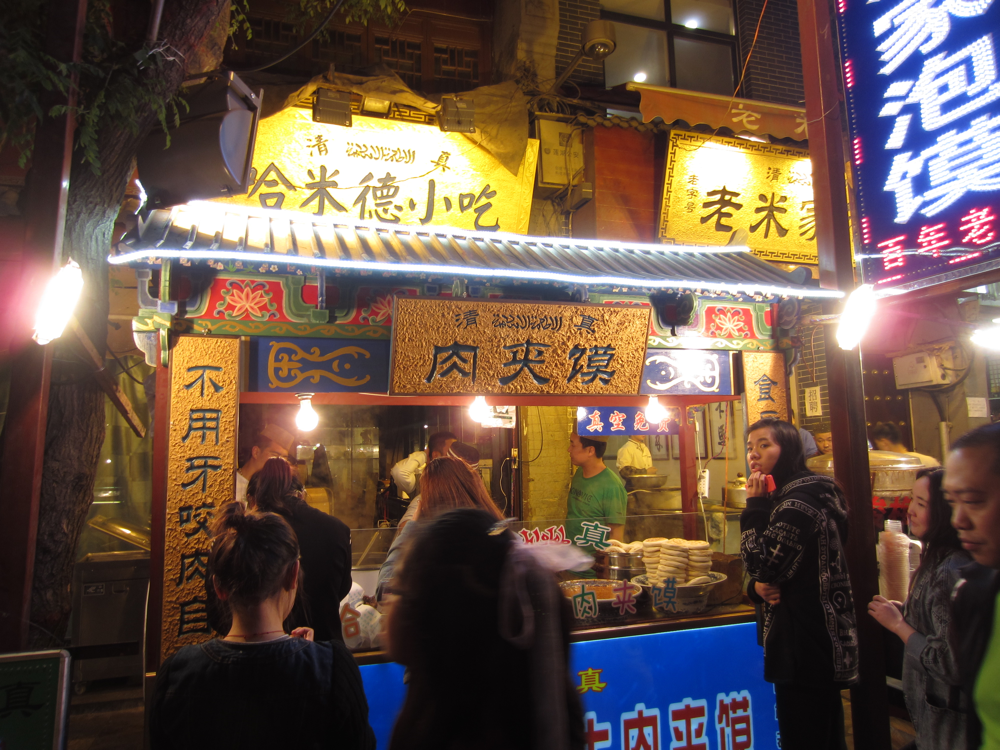

Roujiamo
Roujiamo is one of the best-known foods associated with Xi'an and Shaanxi. The crisp bread and slow-cooked meat make it practical, filling, and strongly linked to local street-food culture.
This page presents food as a cultural lens for understanding Xi'an. Local cuisine is known for wheat-based staples, rich meat flavours, strong seasoning, and a direct street-food character, which together reveal the city’s daily rhythm and regional identity.

The dishes in this section were selected because they are strongly associated with Xi'an and can be explained through clear visual and cultural evidence. This makes the page more specific, more credible, and more suitable for formal coursework presentation.
A food page should not only name dishes. It should also explain where visitors feel the food culture of the city, because in Xi'an atmosphere matters as much as the meal itself.
The homepage introduces Xi'an through history and landmarks, while this page adds a different layer through taste, local routine, and daily culture. As a result, the website feels more complete and more carefully structured.
Begin with roujiamo for a quick and iconic first taste of local street food.
Move to yangrou paomo for a heavier and more traditional meal with stronger regional character.
Add biangbiang noodles to experience the texture and bold seasoning style associated with Shaanxi cuisine.
End in a busy evening food area where dishes and city atmosphere come together.
This page contributes a distinct perspective to the full project by connecting cuisine, place, and visitor experience through a more focused structure.
Instead of repeating general information from the homepage, this food page focuses on signature dishes, dining scenes, and visitor experience. That gives the full website greater thematic depth and a more polished academic presentation.
Back to the Xi'an homepage